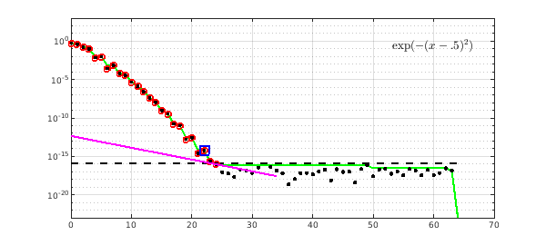
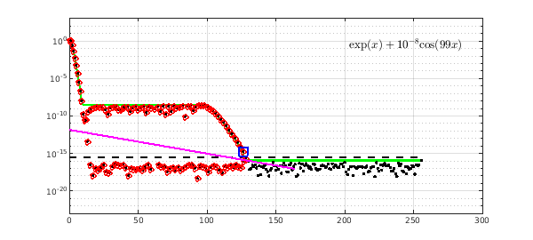
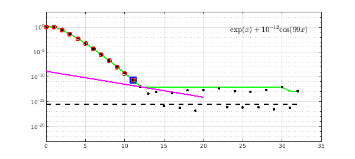
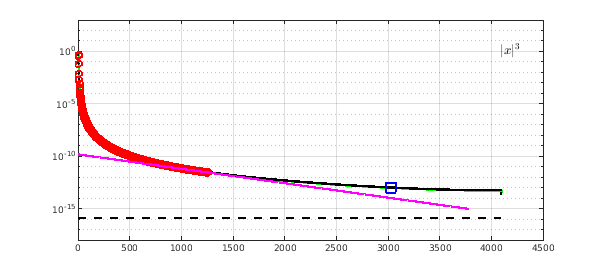
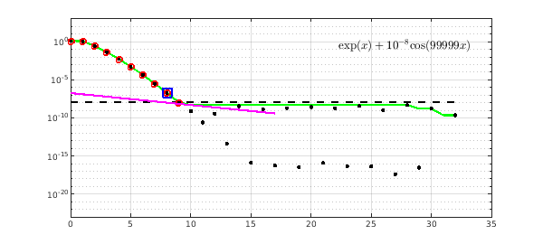

1. Circles, dots, dashed line, and envelope
Since the release of Version 5.3 in 2015, Chebfun has constructed chebfuns by a process encoded in standardChop.m, which implements an algorithm described in [1]. If you want to see the details for a particular function, the new explain command can help. For example, here is an explanation of the chebfun of the function $f(x) = 10000e^x$ on $[-1,1]$:
explain('100000*exp(x)')

The three most basic features of the plot are as follows.
Red circles: Chebyshev coefficients of the constructed chebfun for $f$, of degree 14 in this case. (Throughout this discussion, when we speak of coefficients or other numbers, we mean their absolute values.)
Black dots: Chebyshev coefficients of $f$ on the finest grid that the constructor sampled during the construction process. In this example there are 33 of these (the last one off-scale, below the plot). In general this number will be one of $17, 33, 65,\dots, 65537$.
Horizontal black dashed line: tolerance used for this chebfun construction. This level is equal to the scale of the function (maximum of the Chebyshev coefficients) times a number tol. In a Chebfun computation, tol is set to the Chebfun chebfuneps parameter, whose factory value is machine epsilon, $2^{-52}$, about $10^{-16}$. In explain, tol is set to machine epsilon by default, and we will show later on how the user can override this choice.
Green envelope: this is a monotonically nonincreasing curve showing, at each index, the maximum of this and all subsequent coefficients. Chebfun's construction decisions are based entirely on this envelope. Two functions that have different Chebyshev coefficients but the same envelope will be chopped at exactly the same point.
2. PlateauPoint and tilted line
Two finer points of the explain plot are the black square box, which marks the index we call PlateauPoint, and the tilted magenta line. To explain these it is helpful to look at another example:
explain('exp(-(x-.5)^2)')

First, a couple of notes about cosmetic items. The string input to explain can use symbols like * and ^ rather than their pointwise analogues .* and .^. This is made possible by a call in explain to the MATLAB vectorize command, and it helps to make the printed label at the upper-right of each plot come out as closely as possible to mathematical notation. The code also applies various other formatting adjustments to tidy up that label. For example, note that the * for multiplication that defined our first function did not appear in its label in the plot.
Now, back to the construction process. The standardChop algorithm has three main steps. Step 1 calculates the monotonic envelope of the Chebyshev coefficients. The main feature of the algorithm is the separation into a Step 2, which decides that this series is good enough to be chopped to make a chebfun (if not, we have to sample on a finer grid), and Step 3, which decides exactly where we will chop this series.
A series is good enough to be chopped if it contains a "plateau" of coefficients at approximately the level of tol. The precise decision here, however, is subtle. Any plateau lower than $tol^{2/3}$ might be good enough, but if it's as high as $tol^{2/3}$ it has to be perfectly flat, whereas if it's all the way down at $tol$, it does not have to be flat. In the figure, the black box shows that at index $k=22$, the algorithm has decided that this series is good enough to be chopped. In the end, though, the last Chebyshev coefficient retained is not $k=22$ but $k=24$. In Step 3, the algorithm has judged that coefficients $k=23$ and $k=24$ also contain useful information. To make this judgement, it "holds up a tilted ruler" to the data, and chops the series just before the first point where the green envelope and the magenta ruler touch.
Here is another example, a Runge function with a large parameter.
explain('1/(1+1000*x^2)')
Here we illustrate that a long plateau at level $10^{-8}$ is too high to be accepted; Chebfun insists on capturing it:
explain('exp(x) + 1e-8*cos(99*x)')

If the plateau is lower down, Chebfun chops before it:
explain('exp(x) + 1e-12*cos(99*x)')

Sometimes Chebfun chooses to chop a series before plateauPoint. One sees this most often with non-analytic functions whos series converge slowly:
explain('abs(x)^3')

Here the constructor has decided that doubling the length of the series to get one more digit is not worthwhile. One can always override that decision with a command like this:
f = chebfun('abs(x).^3',3000)
f =
chebfun column (1 smooth piece)
interval length endpoint values
[ -1, 1] 3000 1 1
vertical scale = 1
3. Adjusting the tolerance
For working with noisy data, and also for computations in two and especially three dimensions, it is often desirable to loosen the tolerance. For example, Chebfun cannot capture this function:
f = chebfun('exp(x) + 1e-8*cos(99999*x)')
Warning: Function not resolved using 65537 pts. Have you tried 'splitting on'?
f =
chebfun column (1 smooth piece)
interval length endpoint values
[ -1, 1] 65537 0.37 2.7
vertical scale = 2.7
With a looser tolerance it has no trouble:
f = chebfun('exp(x) + 1e-8*cos(99999*x)','eps',1e-8)
f =
chebfun column (1 smooth piece)
interval length endpoint values
[ -1, 1] 10 0.37 2.7
vertical scale = 2.7
Here we use explain with a second tolerance parameter to see how the length was determined:
explain('exp(x) + 1e-8*cos(99999*x)',1e-8)

4. References
- J. L. Aurentz and L. N. Trefethen, Chopping a Chebyshev series, arXiv 2015 and expected to appear after revision in ACM Transactions on Mathematical Software.